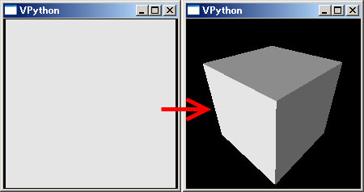
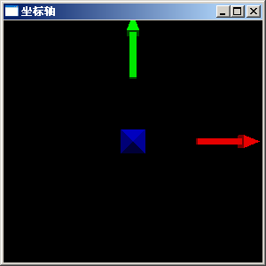
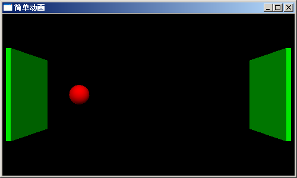
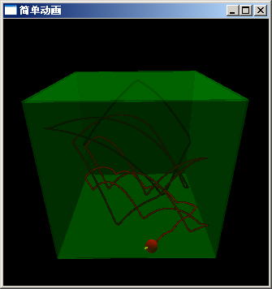

Visual-制作3D演示动画
Visual 是Python的一个简单易用的3D图形库，使用它可以快速创建3D场景、动画。和TVTK相比它更加适合于创建交互式的3D场景，而TVTK则更加适合于数据的3D图形化显示。在本节中将通过一个实例简单的介绍如何使用Visual制作3D动画。
场景、物体和照相机
先来看一个最简单的例子：
from visual import *
box()
这个程序的运行结果如下图的左图所示：

用鼠标旋转之后，可以看出VPython绘制的立方体
我们先从visual库中载入所有对象，然后通过box()创建一个box类的实例，创建这个实例的同时将产生一标题为VPython的场景窗口。由于我们没有给box传递参数，所创建的立方体的所有属性都是缺省配置：
- 立方体的3D空间的坐标为 0, 0, 0，即坐标原点
- 立方体的大小为1, 1, 1
- 立方体的颜色为白色
而场景中的照相机缺省从Z轴的上方往下看（俯视图），缩放比例缺省是正好显示场景中的所有物体。于是我们在场景中看到的是一个刚好充满场景窗口的正方形。
照相机
照相机实际上就是我们观察3D场景的工具，我们通过照相机观察场景中的物体，照相机本身在场景中是不可见的。缩放比例和旋转场景其实都是对照相机进行操作，进行这些操作时，场景中的物体并没有改变，只是我们观察物体的方位改变了。
在场景窗口中，同时按住鼠标左右按键，上下移动鼠标可以进行缩放场景；按住鼠标右键移动鼠标可以旋转场景。右图是进行适当的旋转和缩放之后的效果。我们看到box()确实是创建了一个立方体。
为了搞清楚照相机的位置和坐标轴之间的关系，让我们运行下面这个小程序：
# -*- coding: utf-8 -*-
from visual import *
display(title=u"坐标轴".encode("gb2312"), width=300, height=300)
arrow(pos=(1,0,0), axis=(1,0,0), color=(1,0,0))
arrow(pos=(0,1,0), axis=(0,1,0), color=(0,1,0))
arrow(pos=(0,0,1), axis=(0,0,1), color=(0,0,1))

VPython照相机的缺省位置，红绿蓝分别表示X,Y,Z轴
这段程序中，我们通过调用display()创建一个场景窗口，并且指定了窗口的标题、宽度和高度。标题必须使用Windows系统缺省的编码，因此为了显示中文，需要将unicode转换为gb2312编码。
调用3次arrow()创建了三个箭头物体，我们通过几个关键字参数配置箭头的属性：
- 箭头的起点坐标用pos关键字参数指定，分别为(1,0,0), (0,1,0), (0,0,1)，坐标用3元组元表示。这三个坐标都在坐标轴上。
- 箭头的方向和长度使用axis关键字参数指定，其值为3D空间的矢量，矢量也是用三元组元表示，程序中所用的三个矢量正好是三个坐标轴的方向，长度为1。
- 通过color参数指定箭头物体的颜色，颜色也是用三元组元表示，取值范围为0到1，分别表示红、绿、蓝三色的成分。
通过观察图中的三个箭头的位置，我们可以知道：
- 窗口的中心为坐标原点
- x轴为从左到右
- y轴为从下到上
- z轴为从屏幕里到屏幕外
因此此时的照相机位于z轴正方向上的某点，方向沿着z轴负方向俯视。
简单动画
下面让我们来看看如何用visual创建一个简单的3D动画，先看一下完整的程序：
# -*- coding: utf-8 -*-
from visual import *
display(title=u"简单动画".encode("gb2312"), width=500, height=300)
ball = sphere(pos=(-5,0,0), radius=0.5, color=color.red)
wall_right = box(pos=(6,0,0), size=(0.1, 4, 4), color=color.green)
wall_left = box(pos=(-6,0,0), size=(0.1, 4, 4), color=color.green)
dt = 0.05
ball.velocity = vector(6, 0, 0)
while True:
rate(1/dt)
ball.pos = ball.pos + ball.velocity*dt
if ball.x > wall_right.x-ball.radius or ball.x < wall_left.x+ball.radius:
ball.velocity.x *= -1

球在板子之间反复运动的简单动画
运行这段程序会出现一个有两块绿色板子和一个红球的窗口，红球在两块板子之间反复运动。
第6-8行创建了场景中的三个物体：两块绿色的板子(box)和一个红色的球(sphere)。sphere可以通过radius属性设置其半径，而box可以通过size属性设置其x, y, z轴方向的长度。前面提到过axis属性也可以改变box的大小，这两个属性是互相影响的，在用户手册中我们会详细讨论这个问题。
第10行定义了一个变量dt，我们用它来表示动画中每帧之间的时间间隔。第11行我们给ball添加一个velocity属性，它是一个3D矢量表示球体的速度。请注意velocity不是sphere类固有的属性，是我们为ball物体动态添加的属性。
第13行开始一个死循环，在这个循环中不断地更新ball的pos属性以实现动画效果，为了控制动画的播放速度，在循环中先调用rate函数。由于dt为0.05秒，因此我们动画速度为每秒20帧。rate函数会让程序等待足够长的时间使得动画播放的帧数接近指定的帧数。
第15行修改ball的pos属性，加上在dt时间段中ball的位移量。第16, 17行处理和板子的碰撞，因为pos为球的中心坐标，而碰撞点在球的表面，因此处理碰撞时还需要考虑球的半径。确定碰撞之后，只需要将球的速度反转即可。
由于球的速度为6，而两板之间的间隔为12，因此球从左板移动到右板需要2秒钟时间。
盒子中反弹的球
下面让我们来看一个完整的反弹动画程序。在场景中放置6个半透明的墙面，形成一个正方体，球体的在正方体内部运动反弹，我们可以调整重力加速度(Z方向的加速度)和反弹系数，同时还显示球的速度矢量和运动轨迹。下面是完整的程序：
# -*- coding: utf-8 -*-
from visual import *
display(title=u"简单动画".encode("gb2312"), width=500, height=500)
# 创建球体和6个墙面，墙面设置为半透明，以观察球体的运动轨迹
ball = sphere(pos=(-5,0,0), radius=0.5, color=color.red)
wall_right = box(pos=(6,0,0), size=(0.1, 12, 12), color=color.green, opacity = 0.2)
wall_left = box(pos=(-6,0,0), size=(0.1, 12, 12), color=color.green, opacity = 0.2)
wall_front = box(pos=(0,-6,0), size=(12, 0.1, 12), color=color.green, opacity = 0.2)
wall_back = box(pos=(0,6,0), size=(12, 0.1, 12), color=color.green, opacity = 0.2)
wall_bottom = box(pos=(0,0,-6), size=(12, 12, 0.1), color=color.green, opacity = 0.2)
wall_top = box(pos=(0,0,6), size=(12, 12, 0.1), color=color.green, opacity = 0.2)
dt = 0.05
g = 9.8 # 重力加速度
f = 0.9 # 反弹能量保持系数，1.0表示完全反弹
ball.velocity = vector(8, 6, 12)
bv = arrow(pos = ball.pos, axis=ball.velocity*0.2, color=color.yellow)
ball.trail = curve(color=ball.color)
trail_color = 0 # 轨迹的颜色
while True:
rate(1/dt)
# 重力加速度改变z轴方向的速度，不存在反弹时修改速度
ball.velocity.z -= g * dt
# 根据速度修改球体的位置
ball.pos += ball.velocity * dt
## 速度为正时判断正方向的墙，速度为负时判断负方向的墙
## 处理反弹时需要修正球的位置，使它正好和墙面接触
# 处理左右墙的反弹
if ball.velocity.x > 0 and ball.x >= wall_right.x - ball.radius:
ball.x = wall_right.x - ball.radius
ball.velocity.x *= -f
if ball.velocity.x < 0 and ball.x <= wall_left.x + ball.radius:
ball.x = wall_left.x + ball.radius
ball.velocity.x *= -f
# 处理前后墙的反弹
if ball.velocity.y > 0 and ball.y >= wall_back.y - ball.radius:
ball.y = wall_back.y - ball.radius
ball.velocity.y *= -f
if ball.velocity.y < 0 and ball.y <= wall_front.y + ball.radius:
ball.y = wall_front.y + ball.radius
ball.velocity.y *= -f
# 处理上下墙的反弹
if ball.velocity.z > 0 and ball.z >= wall_top.z - ball.radius:
ball.z = wall_top.z - ball.radius
ball.velocity.z *= -f
elif ball.velocity.z < 0 and ball.z <= wall_bottom.z + ball.radius:
ball.z = wall_bottom.z + ball.radius
ball.velocity.z *= -f
# 更新速度箭头的位置和方向
bv.pos = ball.pos
bv.axis = ball.velocity*0.2
# 添加球的轨迹点
ball.trail.append( pos = ball.pos, color = (trail_color, 0, 0))
trail_color += 1.0/30.0*dt # 30秒后颜色变为全红
if trail_color > 1.0: trail_color = 1.0

球在封闭的盒子中反弹的动画
第8-13行创建上下左右前后六个墙面，通过设置其opacity属性，设置其不透明度为0.2。opacity=0.0表示完全透明，opacity=1.0表示完全不透明。
第19行用arrow()创建了一个箭头物体，它的起始点位置为球体的中心，方向和球体的速度方向相同：
bv = arrow(pos = ball.pos, axis=ball.velocity*0.1, color=color.yellow)
第20行用cureve()创建一个曲线物体，并赋值给球体的trail属性：
ball.trail = curve(color=ball.color)
第27行使用加速度更新球体的速度，第30行使用速度更新球的体位移。
第35-56行，处理球体和墙壁的碰撞，x, y, z三个方向的碰撞处理方式相同，这里以x方向为例简要说明一下碰撞处理。
当球体的x轴方向的速度为正时，判断球体是否和正方向的墙壁(右墙)相撞，如果相撞的话则将其x轴方向的速度反向，并且乘以碰撞系数模拟能量损失，同时修改球体的x轴坐标，使得其正好和右墙相接触。球体的x轴方向速度为负时，和左墙进行碰撞检测：
if ball.velocity.x > 0 and ball.x >= wall_right.x - ball.radius:
ball.x = wall_right.x - ball.radius
ball.velocity.x *= -f
if ball.velocity.x < 0 and ball.x <= wall_left.x + ball.radius:
ball.x = wall_left.x + ball.radius
ball.velocity.x *= -f
第59,60行更新箭头物体的位置和方向以表示球体的速度。第62行将现在的球体的位置添加进球体的轨迹曲线物体。第63,64行更新轨迹的颜色，这样颜色按照随着时间逐渐变红，从黑变红一共需要30秒时间。